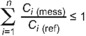
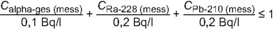

TrinkwV
Ausfertigungsdatum: 20.06.2023
Vollzitat:
"Trinkwasserverordnung vom 20. Juni 2023 (BGBl. 2023 I Nr. 159, S. 2)"
| Ersetzt V 2126-13-1 v. 21.5.2001 I 959 (TrinkwV 2001) |
(+++ Textnachweis ab: 24.6.2023 +++)Die V wurde als Artikel 1 der V v. 20.6.2023 I Nr. 159 vom Bundesministerium für Gesundheit im Einvernehmen mit dem Bundesministerium für Umwelt, Naturschutz, nukleare Sicherheit und Verbraucherschutz, vom Bundesministerium für Ernährung und Landwirtschaft im Einvernehmen mit dem Bundesministerium für Wirtschaft und Klimaschutz, vom Bundesministerium für Umwelt, Naturschutz, nukleare Sicherheit und Verbraucherschutz, vom Bundesministerium für Digitales und Verkehr und vom Bundesministerium der Verteidigung mit Zustimmung des Bundesrates beschlossen. Sie tritt gem. Art. 5 Satz 1 dieser V am 24.6.2023 in Kraft.
(+++ Amtlicher Hinweis des Normgebers auf EG-Recht:
Umsetzung der
EURL 2020/2184 (CELEX Nr: 32020L2084) +++)
| § 1 | Anwendungsbereich |
| § 2 | Begriffsbestimmungen |
| § 3 | Bezugnahmen auf technische Normen |
| § 4 | Vollzug |
| § 5 | Allgemeine Anforderungen |
| § 6 | Mikrobiologische Anforderungen |
| § 7 | Chemische Anforderungen |
| § 8 | Anforderungen in Bezug auf Indikatorparameter |
| § 9 | Radiologische Anforderung |
| § 10 | Stelle der Einhaltung der Anforderungen |
| § 11 | Anzeigepflichten in Bezug auf Wasserversorgungsanlagen |
| § 12 | Anzeigepflichten in Bezug auf Nichttrinkwasseranlagen |
| § 13 | Planung, Errichtung, Instandhaltung und Betrieb von Wasserversorgungsanlagen |
| § 14 | Allgemeine Anforderungen an Werkstoffe und Materialien für die Errichtung oder Instandhaltung von Wasserversorgungsanlagen |
| § 15 | Grundlagen für die Bewertung von Werkstoffen und Materialien im Kontakt mit Trinkwasser |
| § 16 | Konformitätsvermutung |
| § 17 | Trinkwasserleitungen aus Blei |
| § 18 | Aufbereitungszwecke |
| § 19 | Allgemeine Anforderungen an die Aufbereitung |
| § 20 | Liste zulässiger Aufbereitungsstoffe und Desinfektionsverfahren |
| § 21 | Ausnahmen |
| § 22 | Abgabeverbot bei unzulässiger Aufbereitung |
| § 23 | Pflicht zur Aufbereitung |
| § 24 | Untersuchung auf den Betriebsparameter Trübung bei Filtration |
| § 25 | Aufzeichnungspflichten des Betreibers |
| § 26 | Information der Anschlussnehmer und Verbraucher über Aufbereitung |
| § 27 | Besichtigung von Schutzzonen, Untersuchung von Rohwasser |
| § 28 | Untersuchungspflichten in Bezug auf mikrobiologische Parameter, chemische Parameter, Indikatorparameter und Aufbereitungsstoffe bei zentralen und dezentralen Wasserversorgungsanlagen; Untersuchungsplan |
| § 29 | Untersuchungspflichten in Bezug auf mikrobiologische Parameter, chemische Parameter, Indikatorparameter und Aufbereitungsstoffe bei anderen Wasserversorgungsanlagen |
| § 30 | Programm für betriebliche Untersuchungen |
| § 31 | Untersuchungspflichten in Bezug auf Legionella spec. |
| § 32 | Untersuchungspflichten in Bezug auf radioaktive Stoffe |
| § 33 | Ausnahmen von den Untersuchungspflichten in Bezug auf radioaktive Stoffe |
| § 34 | Pflicht zum Risikomanagement für Wasserversorgungsanlagen |
| § 35 | Risikomanagement für Wasserversorgungsanlagen |
| § 36 | Indikatorparameter somatische Coliphagen |
| § 37 | Vorschlag für eine Anpassung oder Beibehaltung des Untersuchungsplans oder für die Bestimmung von Untersuchungspflichten |
| § 38 | Verfahren zur Entscheidung über eine Anpassung oder Beibehaltung des Untersuchungsplans oder für eine Bestimmung von Untersuchungspflichten |
| § 39 | Beauftragung einer zugelassenen Untersuchungsstelle |
| § 40 | Zugelassene Untersuchungsstellen |
| § 41 | Stelle der Probennahme |
| § 42 | Probennahmeverfahren |
| § 43 | Untersuchungsverfahren |
| § 44 | Niederschrift über das Untersuchungsergebnis |
| § 45 | Regelmäßige Information der Anschlussnehmer und Verbraucher in Textform |
| § 46 | Regelmäßige internetbasierte Information der Verbraucher |
| § 47 | Anzeigepflichten |
| § 48 | Klärung der Ursachen und Maßnahmen zur Abhilfe |
| § 49 | Abgabeverbot |
| § 50 | Maßnahmenplan des Betreibers |
| § 51 | Handlungspflichten des Betreibers in Bezug auf Legionella spec. |
| § 52 | Information der Verbraucher bei Überschreitungen von Grenzwerten, Höchstwerten, Anforderungen, Parameterwerten oder Erreichen des technischen Maßnahmenwerts |
| § 53 | Anzeigepflicht und Meldepflicht der zugelassenen Untersuchungsstelle in Bezug auf Legionella spec. |
| § 54 | Überwachung durch das Gesundheitsamt |
| § 55 | Umfang der Überwachung durch das Gesundheitsamt |
| § 56 | Berichtsplan des Gesundheitsamts für ein Wasserversorgungsgebiet |
| § 57 | Überwachung durch die zuständige Behörde im Hinblick auf radioaktive Stoffe |
| § 58 | Mitwirkungs- und Duldungspflichten |
| § 59 | Durchführung der Untersuchungen im Rahmen der Überwachung durch das Gesundheitsamt oder die zuständige Behörde |
| § 60 | Niederschrift über die Überwachung |
| § 61 | Anordnungen des Gesundheitsamts oder der zuständigen Behörde zur Gefahrenvorsorge |
| § 62 | Beurteilung von Gefährdungen und Risiken |
| § 63 | Anordnungen von Maßnahmen des Gesundheitsamts oder der zuständigen Behörde zur Gefahrenabwehr bei Wasserversorgungsanlagen |
| § 64 | Anordnungen des Gesundheitsamts zur Gefahrenabwehr bei Trinkwasserinstallationen |
| § 65 | Klärung der Ursachen und Anordnung von Maßnahmen durch das Gesundheitsamt oder die zuständige Behörde |
| § 66 | Zulassung der Abweichung von Grenzwerten oder Höchstwerten für chemische Parameter |
| § 67 | Information der betroffenen Verbraucher |
| § 68 | Besondere Maßnahmen des Gesundheitsamts in Bezug auf Legionella spec. |
| § 69 | Berichtspflichten der Behörden |
| § 70 | Bewertung von Trinkwasserinstallationen |
| § 71 | Straftaten |
| § 72 | Ordnungswidrigkeiten |
| Anlage 1 | Mikrobiologische Parameter |
| Anlage 2 | Chemische Parameter |
| Anlage 3 | Indikatorparameter |
| Anlage 4 | Anforderungen an Trinkwasser in Bezug auf radioaktive Stoffe |
| Anlage 5 | Betriebsparameter Trübung |
| Anlage 6 | Untersuchungshäufigkeit |
| Anlage 7 | Spezifikationen für die Untersuchung der Parameter |
| Parameter | Grenzwert* |
|---|---|
| Escherichia coli (E. coli) | 0/100 ml |
| Intestinale Enterokokken | 0/100 ml |
| Parameter | Grenzwert* |
|---|---|
| Escherichia coli (E. coli) | 0/250 ml |
| Intestinale Enterokokken | 0/250 ml |
| Pseudomonas aeruginosa | 0/250 ml |
| Parameter | Grenzwert* mg/l | Bemerkungen |
|---|---|---|
| Acrylamid | 0,000 10 | Der Grenzwert bezieht sich auf die Restmonomerkonzentration im Trinkwasser, welche auf Grund der maximalen Freisetzung des Acrylamids nach den Spezifikationen des entsprechenden Polymers und der angewendeten Polymerdosis bei der Herstellung von Materialien im Kontakt mit Trinkwasser oder Verwendung von Aufbereitungsstoffen berechnet wird. Der Nachweis der Einhaltung des Grenzwerts kann auch durch die Untersuchung des Trinkwassers erbracht werden. Die Anforderungen an acrylamidhaltige Aufbereitungsstoffe nach § 20 bleiben unberührt. |
| Benzol | 0,001 0 | |
| Bor | 1,0 | |
| Bromat | 0,010 | |
| Chrom | 0,025 | Der Grenzwert gilt bis zum Ablauf des 11. Januar 2030. |
| 0,005 0 | Der Grenzwert gilt ab dem 12. Januar 2030. | |
| Cyanid | 0,050 | |
| 1,2-Dichlorethan | 0,003 0 | |
| Fluorid | 1,5 | |
| Microcystin-LR | 0,001 0 | Dieser Parameter ist nur im Fall des Auftretens potenziell toxischer Cyanobakterien in dem Wasservorkommen zu bestimmen. Der Grenzwert gilt ab dem 12. Januar 2026. |
| Nitrat | 50 | Die Summe der Beträge aus Nitratkonzentration in mg/l geteilt durch 50 und Nitritkonzentration in mg/l geteilt durch 3 darf nicht größer als 1 sein. |
| Pestizide | 0,000 10 | Pestizide sind Wirkstoffe im Sinne der Verordnung (EG) Nr. 1107/2009 des Europäischen Parlaments und des Rates vom 21. Oktober 2009 über das Inverkehrbringen von Pflanzenschutzmitteln und zur Aufhebung der Richtlinien 79/117/EWG und 91/414/EWG des Rates (ABl. L 309 vom 24.11.2009, S. 1), die zuletzt durch die Verordnung (EU) 2021/383 vom 3. März 2021 (ABl. L 74 vom 4.3.2021, S. 7) geändert wurde, und Wirkstoffe gemäß Artikel 3 Absatz 1 Buchstabe c der Verordnung (EU) Nr. 528/2012 über die Bereitstellung auf dem Markt und die Verwendung von Biozidprodukten, die in Produkten nach Artikel 3 Absatz 1 Buchstabe a in Verbindung mit Anhang V der Verordnung (EU) Nr. 528/2012 zum Einsatz kommen. Dazu gehören Wirkstoffe unter anderem von organischen Insektiziden, organischen Herbiziden, organischen Fungiziden, organischen Nematiziden, organischen Akariziden, organischen Algiziden, organischen Rodentiziden, Antifoulings, Schleimbekämpfungsmitteln und verwandten Produkten (unter anderem Wachstumsregulatoren) sowie Metaboliten im Sinne von Artikel 3 Nummer 32 der Verordnung (EG) Nr. 1107/2009, die für Trinkwasser als relevant eingestuft werden. Ein Pestizid-Metabolit wird für Trinkwasser als relevant eingestuft, wenn Grund zu der Annahme besteht, dass er in Bezug auf seine pestizide Zielwirkung mit dem Ausgangsstoff vergleichbare inhärente Eigenschaften aufweist, und wenn er für Verbraucher eine Schädigung der menschlichen Gesundheit besorgen lässt oder seine Transformationsprodukte auf Grund der in der jeweiligen Wasserversorgungsanlage angewendeten Aufbereitungsverfahren eine Schädigung der menschlichen Gesundheit besorgen lassen. |
| Es sind nur solche Pestizide zu untersuchen, deren Vorkommen im betreffenden Einzugsgebiet der Entnahmestellen für die Trinkwassergewinnung wahrscheinlich ist. Der Grenzwert gilt jeweils für die einzelnen Pestizide. Für die Pestizide Aldrin, Dieldrin, Heptachlor und Heptachlorepoxid gilt abweichend jeweils der Grenzwert von 0,000 030 mg/l. | ||
| Pestizide-gesamt | 0,000 50 | Pestizide-gesamt bezeichnet die Summe der bei der entsprechenden Untersuchung nachgewiesenen und mengenmäßig bestimmten einzelnen Pestizide. Messwerte für die Einzelsubstanz, die unterhalb der Bestimmungsgrenze des jeweiligen Untersuchungsverfahrens liegen, und nicht relevante Metaboliten werden bei der Summenbildung nicht berücksichtigt. Es sind alle zur Summenbildung herangezogenen Pestizide einzeln auszuweisen. |
| Summe PFAS-20 | 0,000 10 | Summe der folgenden nachgewiesenen und mengenmäßig bestimmten Stoffe: Perfluorbutansäure (PFBA), Perfluorpentansäure (PFPeA), Perfluorhexansäure (PFHxA), Perfluorheptansäure (PFHpA), Perfluoroctansäure (PFOA), Perfluornonansäure (PFNA), Perfluordecansäure (PFDA), Perfluorundecansäure (PFUnDA), Perfluordodecansäure (PFDoDA), Perfluortridecansäure (PFTrDA), Perfluorbutansulfonsäure (PFBS), Perfluorpentansulfonsäure (PFPeS), Perfluorhexansulfonsäure (PFHxS), Perfluorheptansulfonsäure (PFHpS), Perfluoroctansulfonsäure (PFOS), Perfluornonansulfonsäure (PFNS), Perfluordecansulfonsäure (PFDS), Perfluorundecansulfonsäure (PFUnDS), Perfluordodecansulfonsäure (PFDoDS) und Perfluortridecansulfonsäure (PFTrDS). Messwerte für die Einzelsubstanz, die unterhalb der Bestimmungsgrenze des jeweiligen Untersuchungsverfahrens liegen, werden bei der Summenbildung nicht berücksichtigt. Die Konzentrationen der zur Summenbildung herangezogenen PFAS sind einzeln auszuweisen. Der Grenzwert gilt ab dem 12. Januar 2026. |
| Summe PFAS-4 | 0,000 020 | Summe der folgenden nachgewiesenen und mengenmäßig bestimmten Stoffe: Perfluoroctansäure (PFOA), Perfluornonansäure (PFNA), Perfluorhexansulfonsäure (PFHxS) und Perfluoroctansulfonsäure (PFOS). Messwerte für die Einzelsubstanz, die unterhalb der Bestimmungsgrenze des jeweiligen Untersuchungsverfahrens liegen, werden bei der Summenbildung nicht berücksichtigt. Die Konzentrationen der zur Summenbildung herangezogenen PFAS sind einzeln auszuweisen. Der Grenzwert gilt ab dem 12. Januar 2028. |
| Quecksilber | 0,001 0 | |
| Selen | 0,010 | |
| Tetrachlorethen und Trichlorethen | 0,010 | Summe der nachgewiesenen und mengenmäßig bestimmten Einzelstoffe. Messwerte für die Einzelsubstanz, die unterhalb der Bestimmungsgrenze des jeweiligen Untersuchungsverfahrens liegen, werden bei der Summenbildung nicht berücksichtigt. |
| Uran | 0,010 |
| Parameter | Grenzwert* mg/l | Bemerkungen |
|---|---|---|
| Antimon | 0,005 0 | |
| Arsen | 0,010 | Der Grenzwert gilt bis zum Ablauf des 11. Januar 2028. Der Grenzwert gilt für Wasserversorgungsanlagen, die vor dem 12. Januar 2028 in Betrieb genommen worden sind, bis zum Ablauf des 11. Januar 2036. |
| 0,004 0 | Der Grenzwert gilt ab dem 12. Januar 2036 für alle Wasserversorgungsanlagen. Der Grenzwert gilt für Wasserversorgungsanlagen, die ab dem 12. Januar 2028 neu in Betrieb genommen werden, bereits ab dem 12. Januar 2028. | |
| Benzo(a)pyren | 0,000 010 | |
| Bisphenol A | 0,002 5 | Der Grenzwert gilt ab dem 12. Januar 2024. |
| Blei | 0,010 | Der Grenzwert gilt bis zum Ablauf des 11. Januar 2028. Er gilt als überschritten, wenn bei einer gestaffelten Stagnationsbeprobung der Messwert einer der drei Proben S0, S1 oder S2 oder bei der Zufallsstichprobe der Messwert über dem Grenzwert liegt. |
| 0,005 0 | Der Grenzwert gilt ab dem 12. Januar 2028. Er gilt als überschritten, wenn bei einer gestaffelten Stagnationsbeprobung der Messwert einer der drei Proben S0, S1 oder S2 oder bei der Zufallsstichprobe der Messwert über dem Grenzwert liegt. | |
| Cadmium | 0,003 0 | |
| Chlorat | 0,070 | Auf eine Untersuchung kann in der Regel verzichtet werden, wenn bei der Wassergewinnung, Wasseraufbereitung und Wasserverteilung keine Desinfektion mit chloratbildenden Aufbereitungsstoffen durchgeführt wurde. Für die zeitweise Dosierung gilt ein Grenzwert von 0,20 mg/l. Bei der Desinfektion mit Chlordioxid gilt der Grenzwert für die zeitweise Dosierung als eingehalten, wenn nicht mehr als 0,20 mg/l Chlordioxid dazugegeben wird. Wenn zur Gefahrenabwehr eine erhöhte Dosierung von Natrium- oder Calciumhypochlorit erforderlich ist, darf die Chloratkonzentration kurzzeitig 0,70 mg/l betragen. Wird von der Möglichkeit einer Untersuchung am Ausgang des Wasserwerks oder im Verteilungsnetz nach § 41 Absatz 3 Gebrauch gemacht, gilt ein Referenzwert von 0,020 mg/l Chlorat. |
| Chlorit | 0,20 | Auf eine Untersuchung kann in der Regel verzichtet werden, wenn keine Desinfektion mit Chlordioxid erfolgt. Der Grenzwert gilt als eingehalten, wenn nicht mehr als 0,20 mg/l Chlordioxid dazugegeben wird. Wird von der Möglichkeit einer Untersuchung am Ausgang des Wasserwerks oder im Verteilungsnetz nach § 41 Absatz 3 Gebrauch gemacht, gilt ein Referenzwert von 0,060 mg/l Chlorit. |
| Epichlorhydrin | 0,000 10 | Der Grenzwert bezieht sich auf die Restmonomerkonzentration im Trinkwasser, welche auf Grund der maximalen Freisetzung des Epichlorhydrins nach den Spezifikationen des entsprechenden Polymers und der angewendeten Polymerdosis bei der Herstellung von Materialien im Kontakt mit Trinkwasser berechnet wird. Der Nachweis der Einhaltung des Grenzwerts kann auch durch die Untersuchung des Trinkwassers erbracht werden. |
| Halogenessigsäuren (HAA-5) | 0,060 | Summe der folgenden an der Entnahmestelle für Trinkwasser des Verbrauchers nachgewiesenen und mengenmäßig bestimmten Reaktionsprodukte im Trinkwasser, die bei der Desinfektion oder Oxidation des Wassers entstanden sind: Monochlor-, Dichlor- und Trichloressigsäure sowie Mono- und Dibromessigsäure. Messwerte für die Einzelsubstanz, die unterhalb der Bestimmungsgrenze des jeweiligen Untersuchungsverfahrens liegen, werden bei der Summenbildung nicht berücksichtigt. Die Konzentrationen der zur Summenbildung herangezogenen HAA-5 sind einzeln auszuweisen. |
| Auf eine Untersuchung kann in der Regel verzichtet werden, wenn bei der Wassergewinnung, Wasseraufbereitung und Wasserverteilung keine Desinfektion mit HAA-5-bildenden Aufbereitungsstoffen durchgeführt wurde. Wird von der Möglichkeit einer Untersuchung am Ausgang des Wasserwerks oder im Verteilungsnetz nach § 41 Absatz 3 Gebrauch gemacht, gilt ein Referenzwert von 0,010 mg/l HAA-5. Der Grenzwert gilt ab dem 12. Januar 2026. | ||
| Kupfer | 2,0 | Der Grenzwert gilt als überschritten, wenn bei einer gestaffelten Stagnationsbeprobung der Messwert einer der drei Proben S0, S1 oder S2 oder der Messwert der Zufallsstichprobe über dem Grenzwert liegt. |
| Nickel | 0,020 | Der Grenzwert gilt als überschritten, wenn bei einer gestaffelten Stagnationsbeprobung der Messwert einer der drei Proben S0, S1 oder S2 oder der Messwert der Zufallsstichprobe über dem Grenzwert liegt. |
| Nitrit | 0,50 | Die Summe der Beträge aus Nitratkonzentration in mg/l geteilt durch 50 und Nitritkonzentration in mg/l geteilt durch 3 darf nicht größer als 1 sein. Am Ausgang des Wasserwerks darf der Messwert für Nitrit 0,10 mg/l nicht überschreiten. |
| Polyzyklische aromatische Kohlenwasserstoffe (PAK) | 0,000 10 | Summe der folgenden nachgewiesenen und mengenmäßig bestimmten Stoffe: Benzo(b)fluoranthen, Benzo(k)fluoranthen, Benzo(ghi)perylen und Indeno(1,2,3-cd)pyren. Messwerte für die Einzelsubstanz, die unterhalb der Bestimmungsgrenze des jeweiligen Untersuchungsverfahrens liegen, werden bei der Summenbildung nicht berücksichtigt. |
| Trihalogenmethane (THM) | 0,050 | Summe der folgenden an der Entnahmestelle für Trinkwasser des Verbrauchers nachgewiesenen und mengenmäßig bestimmten Reaktionsprodukte im Trinkwasser, die bei der Desinfektion oder Oxidation des Wassers entstanden sind: Trichlormethan (Chloroform), Bromdichlormethan, Dibromchlormethan und Tribrommethan (Bromoform). Messwerte für die Einzelsubstanz, die unterhalb der Bestimmungsgrenze des jeweiligen Untersuchungsverfahrens liegen, werden bei der Summenbildung nicht berücksichtigt. Die Konzentrationen der zur Summenbildung herangezogenen THM sind einzeln auszuweisen. Das Gesundheitsamt kann befristet höhere Konzentrationen an der Entnahmestelle für Trinkwasser in der Trinkwasserinstallation bis 0,10 mg/l zulassen, wenn zur Gefahrenabwehr erhöhte Konzentrationen von THM-bildenden Desinfektionsmitteln erforderlich sind. Auf eine Untersuchung kann in der Regel verzichtet werden, wenn bei der Wassergewinnung, Wasseraufbereitung und Wasserverteilung keine Desinfektion mit THM-bildenden Aufbereitungsstoffen durchgeführt wurde. Wird von der Möglichkeit einer Untersuchung am Ausgang des Wasserwerks oder im Verteilungsnetz nach § 41 Absatz 3 Gebrauch gemacht, gilt ein Referenzwert von 0,010 mg/l THM. |
| Vinylchlorid | 0,000 50 | Der Grenzwert bezieht sich auf die Restmonomerkonzentration im Trinkwasser, welche auf Grund der maximalen Freisetzung des Vinylchlorids nach den Spezifikationen des entsprechenden Polymers und der angewendeten Polymerdosis bei der Herstellung von Materialien im Kontakt mit Trinkwasser berechnet wird. Der Nachweis der Einhaltung des Grenzwerts kann auch durch die Untersuchung des Trinkwassers erbracht werden. |
| Parameter | Einheit | Grenzwert/ Anforderung* | Bemerkungen |
|---|---|---|---|
| Aluminium | mg/l | 0,200 | |
| Ammonium | mg/l | 0,50 | |
| Calcitlösekapazität | mg/l CaCO3 | 5 | Die Anforderung gilt für zentrale Wasserversorgungsanlagen und dezentrale Wasserversorgungsanlagen. Die Anforderung gilt als erfüllt, wenn die Wasserstoffionenkonzentration am Wasserwerksausgang ≥ 7,7 ist. Hinter der Stelle der Mischung von Trinkwasser aus zwei oder mehr Wasserwerken darf die Calcitlösekapazität im Verteilungsnetz den Wert von 10 mg/l nicht überschreiten. |
| Chlorid | mg/l | 250 | |
| Clostridium perfringens, einschließlich Sporen | Anzahl/ 100 ml | 0 | Dieser Parameter braucht nur bestimmt zu werden, wenn das Rohwasser von Oberflächenwasser stammt oder von Oberflächenwasser beeinflusst wird. |
| Coliforme Bakterien | Anzahl/ 100 ml | 0 | Für Trinkwasser, das zur Abgabe in verschlossenen Behältnissen bestimmt ist, gilt der Grenzwert 0/250 ml. |
| Eisen | mg/l | 0,200 | |
| Elektrische Leitfähigkeit | µS/cm | 2 790 bei 25 °C | Messungen bei anderen Temperaturen sind zulässig. Der Messwert ist nach den allgemein anerkannten Regeln der Technik auf die Bezugstemperatur von 25 °C umzurechnen. |
| Färbung | m–1 | 0,5 | Bestimmung des spektralen Absorptionskoeffizienten mit Spektralphotometer oder Filterphotometer bei der Wellenlänge 436 nm (Quecksilberlinie) |
| Geruch | für den Verbraucher annehmbar und ohne anormale Veränderung | ||
| Geschmack | für den Verbraucher annehmbar und ohne anormale Veränderung | Bei Verdacht auf eine mikrobielle Kontamination kann auf eine Geschmacksprobe verzichtet werden. | |
| Koloniezahl bei 22 °C | ohne anormale Veränderung | Für Trinkwasser, das zur Abgabe in verschlossenen Behältnissen bestimmt ist, gilt der Grenzwert 100/ml. Bei der Anwendung des Untersuchungsverfahrens nach § 43 Absatz 3 gelten folgende Grenzwerte: 100/ml an der Entnahmestelle für Trinkwasser des Verbrauchers; 20/ml unmittelbar nach Abschluss der Aufbereitung im desinfizierten Trinkwasser; 1 000/ml bei Eigenwasserversorgungsanlagen sowie in Wasserspeichern von mobilen Wasserversorgungsanlagen. | |
| Koloniezahl bei 36 °C | ohne anormale Veränderung | Für Trinkwasser, das zur Abgabe in verschlossenen Behältnissen bestimmt ist, gilt der Grenzwert 20/ml. Bei der Anwendung des Untersuchungsverfahrens nach § 43 Absatz 3 gilt der Grenzwert von 100/ml. | |
| Mangan | mg/l | 0,050 | |
| Natrium | mg/l | 200 | |
| Organisch gebundener Kohlenstoff (TOC) | ohne anormale Veränderung | ||
| Oxidierbarkeit | mg/l O2 | 5,0 | Dieser Parameter braucht nicht bestimmt zu werden, wenn der Parameter TOC bestimmt wird. |
| Sulfat | mg/l | 250 | |
| Trübung | Nephelometrische Trübungseinheiten (NTU) | 1,0 | Der Grenzwert gilt als eingehalten, wenn am Ausgang des Wasserwerks der Grenzwert nicht überschritten wird. |
| Wasserstoffionen- konzentration | pH-Einheiten | ≥ 6,5 und ≤ 9,5 |
| Parameter | Technischer Maßnahmenwert* |
|---|---|
| Legionella spec. | 100/100 ml |
| Parameter | Referenzwert* |
|---|---|
| Somatische Coliphagen | im Rohwasser: 50 plaquebildende Einheiten (PFU) pro 100 ml |
| Parameter | Einheit | Parameterwert |
|---|---|---|
| Radon-222 | Bq/l | 100 |
| Tritium | Bq/l | 100 |
| Richtdosis | mSv/a | 0,10 |
|  |
| Ci(mess) | = gemessene Aktivitätskonzentration des Radionuklids i |
| Ci(ref) | = Referenz-Aktivitätskonzentration des Radionuklids i |
| n | = Anzahl der nachgewiesenen Radionuklide |
| Radionuklid | Referenz-Aktivitätskonzentration (siehe Anmerkung) |
|---|---|
| Radionuklide natürlichen Ursprungs | |
| Blei-210 | 0,2 Bq/l |
| Polonium-210 | 0,1 Bq/l |
| Radium-226 | 0,5 Bq/l |
| Radium-228 | 0,2 Bq/l |
| Uran-234 | 2,8 Bq/l |
| Uran-238 | 3,0 Bq/l |
| Radionuklide künstlichen Ursprungs | |
| Americium-241 | 0,7 Bq/l |
| Cäsium-134 | 7,2 Bq/l |
| Cäsium-137 | 11 Bq/l |
| Cobalt-60 | 40 Bq/l |
| Iod-131 | 6,2 Bq/l |
| Kohlenstoff-14 | 240 Bq/l |
| Plutonium-239/Plutonium-240 | 0,6 Bq/l |
| Strontium-90 | 4,9 Bq/l |
| Anmerkung: | Diese Tabelle enthält die für die häufigsten natürlichen und künstlichen Radionuklide berechneten Referenz-Aktivitätskonzentrationen. Hierbei handelt es sich um genaue Werte, die für eine Dosis von 0,1 mSv und anhand der zuvor genannten Grundlagen und Annahmen berechnet wurden. Die Referenz-Aktivitätskonzentrationen für weitere Radionuklide können auf die gleiche Weise berechnet werden. |
|  |
| Calpha-ges (mess) | = gemessene Gesamt-Alpha-Aktivitätskonzentration |
| CRa-228 (mess) | = gemessene Radium-228-Aktivitätskonzentration |
| CPb-210 (mess) | = gemessene Blei-210-Aktivitätskonzentration |
| Cbeta-rest ≤ 1,0 Becquerel pro Liter |
| Cbeta-rest | = Gesamt-Beta-Aktivitätskonzentration abzüglich der Kalium-40-Aktivitätskonzentration |
| Betriebsparameter | Referenzwert |
|---|---|
| Trübung | im Filtrat:
|
| Menge des in einem Wasserversorgungsgebiet pro Tag abgegebenen oder produzierten Wassers in Kubikmeter pro Tag | Anzahl der Untersuchungen |
|---|---|
| < 1 000 | wöchentlich |
| ≥ 1 000 bis ≤ 10 000 | täglich |
| > 10 000 | fortlaufend |
| Menge des in einem Wasserversorgungsgebiet pro Tag abgegebenen oder produzierten Wassers in Kubikmeter pro Tag (siehe Anmerkung 1) | Parameter der Gruppe A (siehe Anmerkung 2) Anzahl der Untersuchungen pro Jahr (siehe Anmerkungen 3 und 4) | Parameter der Gruppe B (siehe Anmerkung 2) Anzahl der Untersuchungen (siehe Anmerkung 4) |
|---|---|---|
| < 10 | 1 | 1 pro 3 Jahre |
| ≥ 10 bis ≤ 1 000 | 4 | 1 pro Jahr |
| > 1 000 bis ≤ 10 000 | 4 zuzüglich für die über 1 000 Kubikmeter pro Tag hinausgehende Menge jeweils 3 pro weitere 1 000 Kubikmeter pro Tag (Teilmengen als Rest der Berechnung werden auf 1 000 Kubikmeter aufgerundet) | 1 pro Jahr zuzüglich für die über 1 000 Kubikmeter pro Tag hinausgehende Menge jeweils 1 pro 4 500 Kubikmeter pro Tag (Teilmengen als Rest der Berechnung werden auf 4 500 Kubikmeter aufgerundet) |
| > 10 000 bis ≤ 100 000 | 3 pro Jahr zuzüglich für die über 10 000 Kubikmeter pro Tag hinausgehende Menge jeweils 1 pro 10 000 Kubikmeter pro Tag (Teilmengen als Rest der Berechnung werden auf 10 000 Kubikmeter aufgerundet) | |
| > 100 000 | 12 pro Jahr zuzüglich für die über 100 000 Kubikmeter pro Tag hinausgehende Menge jeweils 1 pro 25 000 Kubikmeter pro Tag (Teilmengen als Rest der Berechnung werden auf 25 000 Kubikmeter aufgerundet) |
| Anmerkung 1: | Die Mengen werden als Mittelwerte über ein Kalenderjahr berechnet. |
| Anmerkung 2: | Parameter der Gruppe A
|
Unter den nachfolgend bestimmten Bedingungen werden die Parameter der Gruppe A durch die folgenden Parameter ergänzt:
| |
| Parameter der Gruppe B | |
| Parameter der Gruppe B sind alle Parameter, die nach § 28 Absatz 1 in Verbindung mit den Anlagen 1 bis 3 Teil I zu untersuchen sind, sofern diese nicht bereits als Parameter der Gruppe A zu untersuchen sind. | |
| Anmerkung 3: | Die angegebene Häufigkeit gilt für Trinkwasser, das zur Abgabe beim zeitweiligen Ersatz einer leitungsgebundenen Wasserversorgung bestimmt ist. Abweichend hiervon ist bei einer zeitweiligen, kurzfristigen Wasserversorgung durch Wassertransport-Fahrzeuge das in den Fahrzeugen bereitgestellte Wasser alle 48 Stunden zu untersuchen, wenn der betreffende Wasserspeicher nicht innerhalb dieses Zeitraums gereinigt oder neu befüllt worden ist. |
| Anmerkung 4: | Die angegebene Häufigkeit wird wie folgt errechnet: z. B. 4 300 m3/Tag = 16 Proben pro Jahr für Parameter der Gruppe A (vier für die ersten 1 000 m3/Tag + vier mal drei für die zusätzlichen 3 300 m3/Tag). Für die Parameter der Gruppe B ergeben sich zwei Proben (eine für die ersten 1 000 m3/Tag + eine für die zusätzlichen 3 300 m3/Tag). |
| Menge des in einem Wasserversorgungsgebiet pro Tag abgegebenen oder produzierten Wassers in Kubikmeter pro Tag (siehe Anmerkung) | Anzahl der Untersuchungen pro Jahr |
|---|---|
| Menge ≤ 1 000 | 1 |
| 1 000 < Menge ≤ 10 000 | 1 zuzüglich für die über 1 000 Kubikmeter pro Tag hinausgehende Menge jeweils 1 pro 3 300 Kubikmeter pro Tag (Teilmengen als Rest der Berechnung werden auf 3 300 Kubikmeter aufgerundet) |
| 10 000 < Menge ≤ 100 000 | 3 zuzüglich für die über 10 000 Kubikmeter pro Tag hinausgehende Menge jeweils 1 pro 10 000 Kubikmeter pro Tag (Teilmengen als Rest der Berechnung werden auf 10 000 Kubikmeter aufgerundet) |
| Menge > 100 000 | 10 zuzüglich für die über 100 000 Kubikmeter pro Tag hinausgehende Menge jeweils 1 pro 25 000 Kubikmeter pro Tag (Teilmengen als Rest der Berechnung werden auf 25 000 Kubikmeter aufgerundet) |
| Anmerkung: | Die Mengen werden als Mittelwerte über ein Kalenderjahr hinweg berechnet. Anstelle der Menge des abgegebenen oder produzierten Wassers kann die zuständige Behörde zur Bestimmung der Mindesthäufigkeit auch die Einwohnerzahl eines Versorgungsgebiets heranziehen und eine tägliche Pro-Kopf-Wasserabnahme von 200 Liter ansetzen. |
| Parameter (siehe Anmerkung) | Messunsicherheit in Prozent des Grenzwerts | Bemerkungen |
|---|---|---|
| Acrylamid | 30 | Für den Fall, dass Acrylamid im Trinkwasser bestimmt wird und nicht anhand der Produktspezifikation berechnet wird. |
| Aluminium | 25 | |
| Ammonium | 40 | |
| Antimon | 40 | |
| Arsen | 30 | |
| Benzo(a)pyren | 50 | |
| Benzol | 40 | |
| Bisphenol A | 50 | |
| Blei | 25 | |
| Bor | 25 | |
| Bromat | 40 | |
| Cadmium | 25 | |
| Chlorat | 40 | |
| Chlorid | 15 | |
| Chlorit | 40 | |
| Chrom | 30 | Bestimmungsgrenze 0,000 50 mg/l |
| Cyanid | 30 | Mit dem Verfahren soll der Gesamtcyanidgehalt in allen Formen bestimmt werden können. |
| 1,2-Dichlorethan | 40 | |
| Eisen | 30 | |
| Elektrische Leitfähigkeit | 20 | |
| Epichlorhydrin | 30 | Für den Fall, dass Epichlorhydrin im Trinkwasser bestimmt wird und nicht anhand der Produktspezifikation berechnet wird. |
| Fluorid | 20 | |
| Halogenessigsäuren (HAA-5) | 50 | Gilt je Einzelsubstanz auf Höhe von 20 Prozent (= 1/5, d. h. 0,012 mg/l) des Summengrenzwerts von 5 Verbindungen. Eine Bestimmungsgrenze von 0,003 6 mg/l oder niedriger für die Einzelsubstanzen ist für eine sinnvolle Summenbildung erforderlich. |
| Kupfer | 25 | |
| Mangan | 30 | |
| Microcystin-LR | 30 | |
| Natrium | 15 | |
| Nickel | 25 | |
| Nitrat | 15 | |
| Nitrit | 20 | |
| Organisch gebundener Kohlenstoff (TOC) | 30 | Die Messunsicherheit des TOC sollte bei einer Konzentration von 3 mg/l unter Einhaltung der allgemein anerkannten Regeln der Technik bestimmt werden. |
| Oxidierbarkeit | 50 | |
| Pestizide | 30 | Die Verfahrenskennwerte für einzelne Pestizide dienen als Hinweis. Messunsicherheitswerte von lediglich 30 Prozent des Grenzwerts in Anlage 2 Teil I können bei mehreren Pestiziden erzielt werden, höhere Werte von bis zu 80 Prozent des Grenzwerts in Anlage 2 Teil I können für einzelne Pestizide zugelassen werden. |
| Summe PFAS-20 | 50 | Gilt je Einzelsubstanz auf Höhe von 5 Prozent (= 1/20, d. h. bei 0,000 005 0 mg/l) des Summengrenzwerts von 20 Verbindungen. Eine Bestimmungsgrenze von 0,000 001 5 mg/l oder niedriger für die Einzelsubstanzen ist für eine sinnvolle Summenbildung erforderlich. |
| Summe PFAS-4 | 50 | Gilt je Einzelsubstanz auf Höhe von 25 Prozent (= 1/4, d. h. bei 0,000 005 0 mg/l) des Summengrenzwerts von 4 Verbindungen. Eine Bestimmungsgrenze von 0,000 001 5 mg/l oder niedriger für die Einzelsubstanzen ist für eine sinnvolle Summenbildung erforderlich. |
| Polyzyklische aromatische Kohlenwasserstoffe (PAK) | 50 | Die Verfahrenskennwerte gelten für einzelne spezifizierte PAK bei 25 Prozent des Grenzwerts nach Anlage 2 Teil II. |
| Quecksilber | 30 | |
| Selen | 40 | |
| Sulfat | 15 | |
| Tetrachlorethen | 30 | Die Verfahrenskennwerte gelten für Tetrachlorethen bei 50 Prozent des Grenzwerts nach Anlage 2 Teil I. |
| Trichlorethen | 40 | Die Verfahrenskennwerte gelten für Trichlorethen bei 50 Prozent des Grenzwerts nach Anlage 2 Teil I. |
| Trihalogenmethane (THM) | 40 | Die Verfahrenskennwerte gelten für einzelne spezifizierte THM bei 25 Prozent des Grenzwerts nach Anlage 2 Teil II. |
| Trübung | 30 | Die Messunsicherheit sollte unter Einhaltung der allgemein anerkannten Regeln der Technik auf der Ebene von 1,0 NTU (nephelometrische Trübungseinheit) geschätzt werden. |
| Uran | 30 | |
| Vinylchlorid | 50 | Für den Fall, dass Vinylchlorid im Trinkwasser bestimmt wird und nicht anhand der Produktspezifikation berechnet wird. |
| Wasserstoffionenkonzentration | 0,2 | Die Werte für die Messunsicherheit werden in pH-Einheiten ausgedrückt. |
| Anmerkung: | Für die Parameter Färbung, Geruch und Geschmack sind keine Verfahrenskennwerte spezifiziert. |
| Parameter, Gesamt-Aktivitätskonzentrationen und Radionuklide | Nachweisgrenze (siehe Anmerkungen 1 und 2) |
|---|---|
| Americium-241 | 0,06 Bq/l |
| Blei-210 | 0,02 Bq/l |
| Cäsium-134 | 0,5 Bq/l |
| Cäsium-137 | 0,5 Bq/l |
| Cobalt-60 | 0,5 Bq/l |
| Gesamt-Alpha-Aktivitätskonzentration | 0,04 Bq/l (siehe Anmerkung 3) |
| Gesamt-Beta-Aktivitätskonzentration | 0,4 Bq/l |
| Iod-131 | 0,5 Bq/l |
| Kohlenstoff-14 | 20 Bq/l |
| Plutonium-239/Plutonium-240 | 0,04 Bq/l |
| Polonium-210 | 0,01 Bq/l |
| Radium-226 | 0,04 Bq/l |
| Radium-228 | 0,02 Bq/l (siehe Anmerkung 4) |
| Radon-222 | 10 Bq/l |
| Strontium-90 | 0,4 Bq/l |
| Tritium | 10 Bq/l |
| Uran-234 | 0,02 Bq/l |
| Uran-238 | 0,02 Bq/l |
| Anmerkung 1: | Die Nachweisgrenze ist zu berechnen nach der Norm DIN EN ISO 11929-1-3 „Bestimmung der charakteristischen Grenzen (Erkennungsgrenze, Nachweisgrenze und Grenzen des Überdeckungsintervalls) bei Messungen ionisierender Strahlung – Grundlagen und Anwendungen)“ mit Wahrscheinlichkeiten des Fehlers erster bzw. zweiter Art von jeweils fünf Prozent. |
| Anmerkung 2: | Messunsicherheiten sind zu berechnen und zu dokumentieren. Zusätzlich kann der Vertrauensbereich ausgewiesen werden, wobei dieser mit der Wahrscheinlichkeit 1 − y von 95 Prozent festzulegen ist. |
| Anmerkung 3: | Diese Nachweisgrenze gilt nur für die Verwendung des Prüfwerts von 0,1 Becquerel pro Liter unter Berücksichtigung der Aktivitätskonzentrationen von Blei-210 und Radium-228. Für die Verwendung des Prüfwerts von 0,05 Becquerel pro Liter ohne weitere nuklidspezifische Untersuchungen, wenn ausschließlich natürliche Radionuklide zu berücksichtigen sind, gilt die Nachweisgrenze von 0,025 Becquerel pro Liter. |
| Anmerkung 4: | Diese Nachweisgrenze gilt nur für die Erstuntersuchung im Hinblick auf die Richtdosis für ein neues Wasservorkommen. Falls die Erstuntersuchung keinen plausiblen Grund dafür ergibt, dass Radium-228 20 Prozent der abgeleiteten Konzentration überschreitet, kann für regelmäßige Untersuchungen ein Untersuchungsverfahren mit einer Nachweisgrenze von bis zu 0,08 Becquerel pro Liter für Radium-228 angewendet werden. |